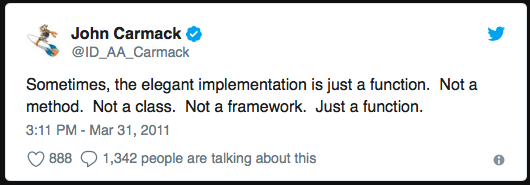

An Intro to Python
The Pythonic Way!
This is going to be a very opinionated talk
Sorry, not sorry.
About Me
Table of Contents
- Python Overview
- What Do I mean by "Pythonic"
- PEP8
- The Zen of Python
- 8 Fold Path to Pythonic Zen
- Big 'Ol Pythonic Refactor
- Mike's Recommended Python Setup
- Questions
- Resources
Python Overview
Who...
uses Python daily?
has been using Python for 1 month?
has been using Python for 1 year?
has been using Python for 5 years?
Regardless of experience, I hope you learn something and have fun!
BDFL ❤️

Python is...
Named after Monty Python
A little silly
28 years old
Python 3 is 10 years old! 🎉
🦆 Typed
If it walks like a duck and it quacks like a duck, then it must be a duck.
But still...
Strongly Typed
General Purpose Programming Language
With OO and Procedural Features
Python is a language
But there are different implementations
- CPython*
- PyPy
- Jython
- IronPython
- etc...
I ❤️ Python
Hopefully you'll love it too!

"Pythonic" Python
Pythonic Means
Using the features of the language in an idiomatic way to improve readability, maintainability, and performance
– Me. Just Now
PEP
A PEP is a Python Enhancement Proposal
PEP 1 defines what a PEP is, and the PEP workflow
An important one you'll hear about a lot is PEP 8, the Python style guide
PEP 8
The style guide is a good start to write readable python code
But as the first section just after the introduction says:
A Foolish Consistency is the Hobgoblin of Little Minds
– PEP 8
PEP 20
PEP 20 -- The Zen of Python
Long time Pythoneer Tim Peters succinctly channels the BDFL's guiding principles for Python's design into 20 aphorisms, only 19 of which have been written down.
import this
The Eight-Fold Path of Pythonic Zen
☸️
Many Thanks to Raymond Hettinger
Most of this next section is adapted and copied from Raymond's talk: Transforming Code into Beautiful, Idiomatic Python
Raymond is the man
Follow @raymondh
Loops
Python uses an iterator protocol
Avoid using indicies. They're usually not needed
If you do need indices, use `enumerate()`
Example - Loop X Times
squares = []
for i in [1, 2, 3, 4, 5]:
squares.append(i ** i)
squares = []
for i in range(1, 6):
squares.append(i ** i)
squares = [i ** i for i in range(1, 5)]
Example - Loop over Sequences
colours = ['red', 'blue', 'green', 'yellow']
for i in range(len(colours)):
print('I love the colour {0}'.format(colours[i]))
colours = ['red', 'blue', 'green', 'yellow']
for colour in colours:
print(f'I love the colour {colour}')
colours = ['red', 'blue', 'green', 'yellow']
for colour in reversed(colours): # Backwards!
print(f'I love the colour {colour}')
Example - Looping With Indices
colours = ['red', 'blue', 'green', 'yellow']
for i in range(len(colours)):
print(i, '-->', colours[i])
colours = ['red', 'blue', 'green', 'yellow']
for i, colour in enumerate(colours):
print(f'{i} --> {colour}')
colours = ['red', 'blue', 'green', 'yellow']
for colour in reversed(colours): # Backwards!
print(f'I love the colour {colour}')
Example - Looping Over Two Sequences
names = ['Bob', 'Sally', 'Jane']
colours = ['red', 'blue', 'green', 'yellow']
min_len = min(len(names), len(colours))
for i in range(min_len):
print(names[i], 'likes', colours[i])
names = ['Bob', 'Sally', 'Jane']
colours = ['red', 'blue', 'green', 'yellow']
for name, colour in zip(names, colours):
print(f'{name} likes {colour}!')
Example - Sorted Looping
colors = ['red', 'green', 'blue', 'yellow']
for color in sorted(colors):
print(color)
colors = ['red', 'green', 'blue', 'yellow']
for color in sorted(colors, reverse=True): # Backwards!
print(color)
A little more advanced...
Example - Loop Until Sentinel
blocks = []
while True:
block = f.read(32)
if block == '':
break
blocks.append(block)
blocks = []
read_32_bytes = partial(f.read, 32)
for block in iter(read_32_bytes, ''):
blocks.append(block)
Example - For Else
def find(sequence, target):
found = False
for i, value in enumerate(sequence):
if value == target:
found = True
break
if not found:
return -1
return i
def find(sequence, target):
for i, value in enumerate(sequence):
if value == target:
break
else:
return -1
return i
Dictionaries
Almost everything in Python is a dict
Effectively using dictionaries is important for pythonic code
Example - Loop Over Keys
novel = {
'title': 'Don Quixote',
'author': 'Miguel De Cervantes',
'pages': 1072,
'ISBN': '978-0142437230'
}
for key in novel:
print(key)# Can also use .keys() to get a set-like view
for key in novel.keys():
print(key)
Example - Loop Over Values
novel = {
'title': 'Don Quixote',
'author': 'Miguel De Cervantes',
'pages': 1072,
'ISBN': '978-0142437230'
}
for key in novel:
print(novel[key])
novel = {
'title': 'Don Quixote',
'author': 'Miguel De Cervantes',
'pages': 1072,
'ISBN': '978-0142437230'
}
for value in novel.values():
print(value)
Example - Loop Over Keys and Values
novel = {
'title': 'Don Quixote',
'author': 'Miguel De Cervantes',
'pages': 1072,
'ISBN': '978-0142437230'
}
for key in novel:
print(key, '-->', novel[key])
novel = {
'title': 'Don Quixote',
'author': 'Miguel De Cervantes',
'pages': 1072,
'ISBN': '978-0142437230'
}
for key, value in novel.items():
print(key, '-->', value)
Example - Construct a Dictionary
keys = ['title', 'author', 'pages', 'ISBN']
values = [
'Don Quixote',
'Miguel De Cervantes',
1072,
'978-0142437230'
]
novel = {}
for i, key in enumerate(keys):
novel[key] = values[i]
keys = ['title', 'author', 'pages', 'ISBN']
values = [
'Don Quixote',
'Miguel De Cervantes',
1072,
'978-0142437230'
]
novel = dict(zip(keys, values))
keys = ['title', 'author', 'pages', 'ISBN']
values = [
'Don Quixote',
'Miguel De Cervantes',
1072,
'978-0142437230'
]
novel = {k: v for k, v in zip(keys, values)}
Example - Counting With A Dictionary
story = (
'peter piper picked a peck of pickled peppers '
'a peck of pickled peppers peter piper picked'
)
counter = {}
for word in story.split():
if word not in counter:
counter[word] = 0
counter[word] += 1
story = (
'peter piper picked a peck of pickled peppers '
'a peck of pickled peppers peter piper picked'
)
counter = {}
for word in story.split():
counter[word] = counter.get('word', 0) + 1
from collections import defaultdict
story = (
'peter piper picked a peck of pickled peppers '
'a peck of pickled peppers peter piper picked'
)
counter = defaultdict(int)
for word in story.split():
counter[word] += 1
Example - Grouping With A Dictionary
colours = [
'red', 'green', 'blue', 'magenta',
'purple', 'brown', 'yellow'
]
groups = {}
for colour in colours:
key = len(colour)
if key not in groups:
groups[key] = []
groups[key].append(colour)
colours = [
'red', 'green', 'blue', 'magenta',
'purple', 'brown', 'yellow'
]
groups = {}
for colour in colours:
key = len(colour)
groups.setdefault(key, []).append(colour)
from collections import defaultdict
colours = [
'red', 'green', 'blue', 'magenta',
'purple', 'brown', 'yellow'
]
groups = defaultdict(list)
for colour in colours:
key = len(colour)
groups[key].append(colour)
Example - Linking Dictionaries
import os
import argparse
defaults = {'username': 'noseworthy', 'debug': False}
parser = argparse.ArgumentParser()
parser.add_argument('-d', '--debug', action='store_true')
namespace = parser.parse_args(['-d'])
command_line_args = {
k: v for k, v in vars(namespace).items() if v
}
args = defaults.copy()
args.update(os.environ)
args.update(command_line_args)
from collections import ChainMap
import os
import argparse
defaults = {'username': 'noseworthy', 'debug': False}
parser = argparse.ArgumentParser()
parser.add_argument('-d', '--debug', action='store_true')
namespace = parser.parse_args(['-d'])
command_line_args = {
k: v for k, v in vars(namespace).items() if v
}
args = ChainMap(command_line_args, os.environ, defaults)
Improve Clarity
Use keywords and names over positional args and indices
Use namedtuple to add names to tuple fields
Example - Unpack Sequences
person = (
'mike', 'noseworthy', 0x1E, 'https://github.com/noseworthy'
)
first_name = person[0]
last_name = person[1]
age = person[2]
website = person[3]
person = (
'mike', 'noseworthy', 0x1E, 'https://github.com/noseworthy'
)
first_name, last_name, age, website = person
# This is atomic, and easier to read!
Example - Keyword Arguments
# what the heck does this do?
repo_search('noseworthy', 10, True)
# Now it's a little clearer
repo_search(username='noseworthy', limit=10, forks=True)
# It probably searches github for repos owned by
# the user 'noseworthy', returns a max of 10,
# and includes forked repos.
def add_contact(f_name, l_name, age, website):
...
person = (
'mike', 'noseworthy', 0x1E, 'https://github.com/noseworthy'
)
# unpack sequence as positional arguments
add_contact(*person)
def add_contact(f_name, l_name, age, website):
...
person = {
'f_name': 'mike',
'l_name': 'noseworthy',
'age': 0x1E,
'website': 'https://github.com/noseworthy'
}
# unpack mapping as keyword based parameters
add_contact(**person)
Example - Update Multiple States
def fibonacci(n):
x = 0
y = 1
for i in range(n):
print(x)
t = y
y = x + y
x = t
def fibonacci(n):
x, y = 0, 1
for i in range(n):
print(x)
x, y = y, x + y
Example - Clarify Multiple Returns
# Who's a what now? 🤔
tester.runtest()
>> (10, 1, 3, 14)
# 😲 Much Better.
tester.runtest()
>> TestResult(passed=10, failed=1, skipped=3, total=14)
from collections import namedtuple
TestResult = namedtuple(
'TestResult',
['passed', 'failed', 'skipped', 'total']
)
def runtest():
...
return TestResult(passed, failed, skipped, total)
Efficiency
Don't move data around unnecessarily
Cache hits are fast, misses are slow
Use generators instead of loading all data into memory
Example - Sums
def first_n(n)
num, numbers = 0, []
while num < n:
numbers.apend(num)
num += 1
return numbers
sum_of_first_n = sum(first_n(1_000_000))
def first_n(n)
num = 0
while num < n:
yield num
num += 1
sum_of_first_n = sum(first_n(1_000_000))
Example - List Comprehensions
result = []
for i in range(10):
s = i ** 2
result.append(s)
sum_of_squares = sum(result)
# list comprehension (clearer, but fills memory)
sum_of_squares = sum([i ** 2 for i in range(10)])
# generator expression (Clear AND fast and space efficient)
sum_of_squares = sum(i ** 2 for i in range(10))
String Handling
Use join, don't use +
Use ''' or """ for multi-line string literals
Two strings next to each other will automatically concat
Example - String Concat
food_items = ['spam', 'sausage', 'eggs', 'bacon', 'toutons']
meal = 'I ate: ' + food_items[0]
for food in food_items[1:]:
meal += ', ' + food
meal += ' for breakfast!'
print(meal)
food_items = ['spam', 'sausage', 'eggs', 'bacon', 'toutons']
meal = 'I ate: {0} for breakfast!'
print(meal.format(', '.join(food_items)))
Example - Multi-Line Strings
import json
json_string = '''
{
"name": "Michael",
"age": 30,
"languages": [
"english",
"python"
]
}
'''
person = json.loads(json_string)
story = (
'The quick brown fox '
'jumped over the '
'lazy dog.'
)
print(story)
>> 'The quick brown fox jumped over the lazy dog.'
Updating Sequences
If updating the beginning of a list, use deque
Example - deque
names = ['sally', 'ann', 'jimmy', 'bobby']
# VERY SLOW - Need to shift everything in the list around
del names[0]
names.pop(0)
names.insert(0, 'sue')
from collections import deque
names = deque(['sally', 'ann', 'jimmy', 'bobby'])
# O(1) time! 🔥 - Double ended queue to the rescue!
del names[0]
names.pop(0)
names.insert(0, 'sue')
Decorators and Context Managers
Advanced features for expert pythonistas
Separates business and admin logic
Clean refactoring tools that improve code reuse
Example - Decorator
import urllib.request
def get_url(url, cache={}):
if url in cache:
return cache[url]
with urllib.request.urlopen(url) as response:
page = response.read()
cache[url] = page
return page
import urllib.request
from decorators import cache
@cache
def get_url(url):
with urllib.request.urlopen(url) as response:
return response.read()
from functools import wraps
def cache(func):
cache = {}
@wraps(func)
def wrapped_func(*args):
if args in cache:
return cache[args]
result = func(*args)
saved[args] = result
return result
return wrapped_func
Use functools.lru_cache
This was added in Python 3.2
Just use this where applicable
Example - Read File
def get_words(file_path):
f = open(file, 'r')
try:
data = f.read()
finally:
f.close()
return data.split()
def get_words(file_path):
with open(file, 'r') as f:
data = f.read()
return data.split()
Example - Locks
import threading
lock = threading.lock()
lock.acquire()
try:
print('Critical Section 1')
print('Critical Section 2')
finally:
lock.release()
lock = threading.lock()
lock.acquire()
with lock:
print('Critical Section 1')
print('Critical Section 2')
Example - Explicitly Silence Exceptions
import os
try:
os.remove('file.png')
except OSError:
pass
import os
from contextlib import suppress
with suppress(OSError):
os.remove('file.png')
Stop Writing Classes
Some of you are going to want a class for everything
Classes are great, but not everything is a class
Sometimes a class, is really just a function
Truth
Example - Not a Class
class Greeting:
def __init__(self, greet):
self.greet = greet
def say_greeting(name):
print(self.greet + name)
g = Greeting('Hello there, ')
g.say_greeting('Michael')
def greet(greeting, name):
print(greeting + name)
greet('Hello there,', 'Michael')
Empty Classes
# Why!?!
class Flow:
pass
Example - Non-Pythonic Class
class School:
def __init__(self, students):
self.students = students or []
def enroll(self, student):
self.students.append(student)
def class_size(self):
return len(self.students)
...
class School:
def __init__(self, students):
self.students = students or []
def enroll(self, student):
self.students.append(student)
def __len__(self):
return len(self.students)
...
# really just an array...
school = [student1, student2, student3]
Super Trivial Examples
But these do happen
They do obfuscate your code
Use the class level dunders
- __call__
- __len__
- __setitem__
- __getitem__
- __iter__
- etc...
Allows you to use the class with standard operators
Big 'Ol Refactor
My Setup

What are you building?
Script?
Library/Package?
Application?
Install Python
$ brew install python
$ curl -L https://github.com/pyenv/pyenv-installer/raw/master/bin/pyenv-installer | bash
$ pyenv install 3.6.5
$ pyenv global 3.6.5
Create VirtualEnv
$ mkdir project && cd project
$ python -m venv .venv/project
$ . .venv/project/bin/activate
$ pyenv virtualenv project
$ mkdir project && cd project
$ pyenv local project
pip install to your hearts content!
This setup is pretty good, I think
Keeps dependencies isolated to projects
The PYPA is now recommending pipenv
I haven't used it, though I hear it is good
Daily Workflow
I use the ipython interpreter and the
pudb debugger daily
My daily workflow sees me in ipython playing with data and apis and testing things out before codifying them
Bonus Unsolicited Opinions!
- Don't leave module level code around
- Adopt the style of your project and team, but try to be pythonic otherwise
- Don't put too much in
__init__.py - Use classes sparingly
- Type hints can be useful though I haven't used them much